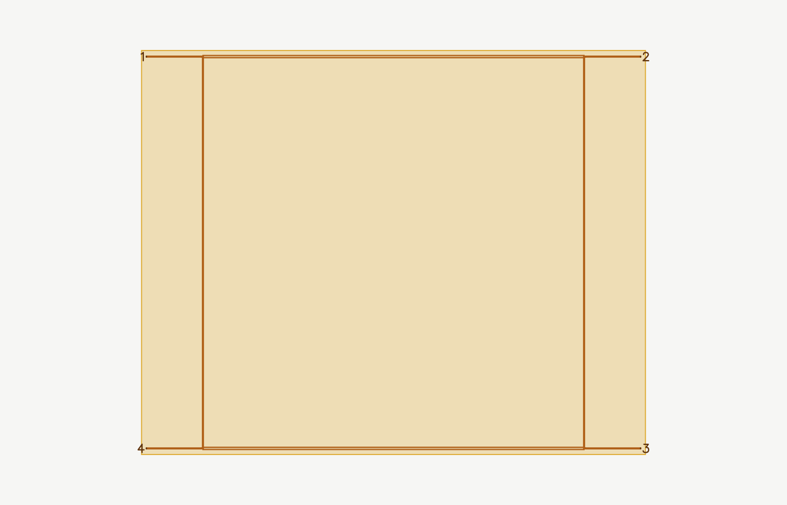
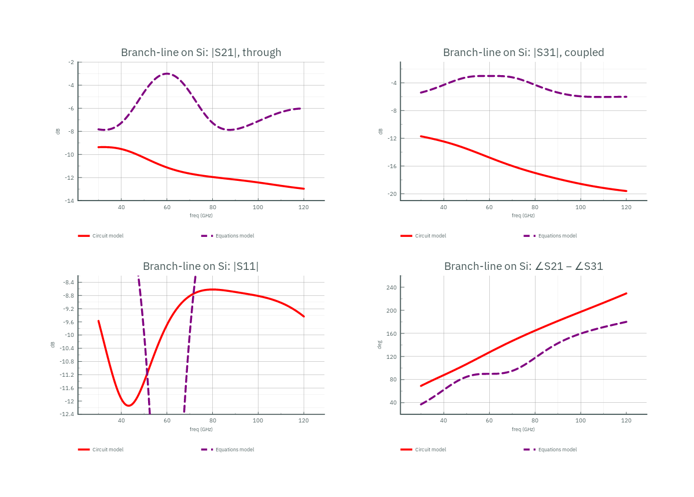

RFIC Branch-Line
A branch-line hybrid at 60 GHz on the top metal of a silicon back-end, referenced to Metal1 so its field stays out of the silicon, laid out by Update Layout, its circuit model set beside an equations model of ideal lines.
File ▸ New ▸ Examples ▸ RFIC Branch-Line copies this workspace to a folder you choose and opens it on this README. Every example is listed in Example Workspaces.
The branch-line hybrid of the Dividers and Couplers example on a silicon back-end: an MBLC at 60 GHz on the top metal of
the shipped three-metal stack, over Metal1 as its ground, a thin-film microstrip. It is laid out by Update Layout from
Schematic, and a test bench sets its circuit model beside an equations model. The workspace's default technology is the
die's, tech/rfic-Si_3LM_TFR_100um.ctech.
The cells
| Cell | Views | What it is |
|---|---|---|
| Branch-Line | schematic, layout | A one-section MBLC with a 0.1 mm line from each of its four pins to a port, all on Metal3 over Metal1 |
| Branch-Line Bench | schematic | The cell's circuit, and its equations model: ideal lines of the closed-form impedances and lengths, and each feed an ideal line of its own impedance and length at F |
Branch-Line Bench.cdd |
data display | |S21|, |S31|, |S11| and the phase of S21 against S31, the circuit model as a line and the equations model dashed |
Run it
Simulate Branch-Line Bench; Branch-Line Bench.cdd opens. No results ship.
Branch-line hybrid
An MBLC with Z0 50 Ω and F 60 GHz: 35.4 Ω series arms and 50 Ω shunt arms, each a quarter wave between the
reference planes of its junctions. Every line has SignalLayer Metal3 and GroundReference Metal1, so its field stays
in the 1.8 µm of oxide between them, out of the conducting silicon below, and 50 Ω is 1.8 µm wide. Update Layout draws
the Metal1 ground under the lines, and LVS finds no error.


| At 60 GHz | Equations | Circuit |
|---|---|---|
| |S11| | −92.6 dB | −11.8 dB |
| |S21|, through | −3.01 dB | −10.6 dB |
| |S31|, coupled | −3.01 dB | −14.4 dB |
| ∠S21 − ∠S31 | 90.0° | 90.0° |
The quadrature holds. The 9 dB lost is the thin-film microstrip's conductor loss on 1.8 µm of oxide at 60 GHz, not a fault of the model. Referenced to the backside instead, the lines would sit on the conducting silicon, whose loss their closed form leaves out.